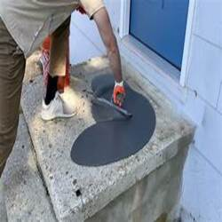
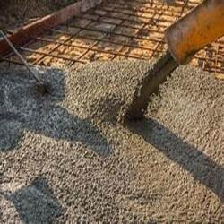
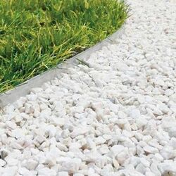

-
.jpg)
Choosing the Right Concrete Supplier & Custom Concrete Mix
Posted on January 29, 2024 by Abby Harris
Texan Concrete & Ready Mix, Houston concrete supplier, offers reliability and innovation for the construction industry in Texas, providing a diverse range of high-quality concrete products and services. In this article, we delve into the essential components that define the … Continue reading →
Posted in Concrete Contractor, Ready Mix Concrete | Comments Off on Choosing the Right Concrete Supplier & Custom Concrete Mix
-
How to Protect Your Garage Concrete Floor
Posted on October 20, 2023 by Abby Harris
As homeowners in Houston, we rely on our garages as entryways into our homes, storage for miscellaneous items, and parking spaces for vehicles. As these uses can bring dirt, moisture, oil, and other substances onto the concrete surfaces of the … Continue reading →
Posted in Concrete Floors, Ready Mix Concrete | Comments Off on How to Protect Your Garage Concrete Floor
-
How to Paint Concrete Surfaces
Posted on June 21, 2023 by Abby Harris
Do you have concrete surfaces on your property that need a fresh coat of paint to spruce them up? Whether it’s the steps leading up to your front door or an outdoor patio area, painting concrete can be daunting. But … Continue reading →
Posted in Ready Mix Concrete, Residential Concrete | Comments Off on How to Paint Concrete Surfaces
-

What is Concrete Slump?
Posted on April 21, 2023 by Abby Harris
In construction, concrete slump is a measure of the consistency of concrete. It can have a huge effect on your project, as it determines if your concrete has too much, too little, or just the right amount of water. Different … Continue reading →
Posted in Concrete Mix Ratios, Ready Mix Concrete | Comments Off on What is Concrete Slump?
-
Best Types of Sealers to Use on Houston Ready Mix Concrete
Posted on March 21, 2023 by Phoebee Johnson
Houston ready mix concrete is a very versatile material, and it can be used in a variety of ways. It’s highly durable and long-lasting. You can also improve the durability and lifespan of your concrete by sealing it with special … Continue reading →
Posted in Concrete, Ready Mix Concrete | Comments Off on Best Types of Sealers to Use on Houston Ready Mix Concrete
-

Houston Ready Mix Concrete in Outdoor Kitchens
Posted on January 20, 2023 by Phoebee Johnson
Houston ready mix concrete is the perfect option for many residential projects. This concrete is custom formulated for your exact needs and delivered by our experts, fully mixed and ready to pour. One way that many Texans are using ready … Continue reading →
Posted in Concrete, Concrete Contractor, Ready Mix Concrete | Comments Off on Houston Ready Mix Concrete in Outdoor Kitchens
-

Houston Concrete Supplier: Resurfacing Stamped Concrete
Posted on December 21, 2022 by Phoebee Johnson
Stamped concrete is a beautiful and decorative addition to any home or commercial property. This type of concrete can look like any number of surfaces, including stone, brick, and tile. However, stamped concrete from your Houston concrete supplier is often … Continue reading →
Posted in Concrete, Concrete Maintenance, Ready Mix Concrete | Comments Off on Houston Concrete Supplier: Resurfacing Stamped Concrete
-

Houston Ready Mix Concrete: Replacing Concrete Steps
Posted on November 21, 2022 by Phoebee Johnson
Concrete steps are a great option for both residential and commercial use. They are incredibly durable and can be designed to match nearby walkways for a cohesive look. However, there may come a time where you need replace your concrete … Continue reading →
Posted in Concrete, Concrete Repair or Replacement, Ready Mix Concrete | Comments Off on Houston Ready Mix Concrete: Replacing Concrete Steps
-

Pouring Houston Ready Mix Concrete Over Existing Slabs
Posted on November 21, 2022 by Phoebee Johnson
If you have an old slab of concrete that you want to renew, you might wonder if it’s possible to simply pour new Houston ready mix concrete over the old concrete. This is certainly possible, though there are several things … Continue reading →
Posted in Concrete, Concrete Repair or Replacement, Ready Mix Concrete | Comments Off on Pouring Houston Ready Mix Concrete Over Existing Slabs
-

Advantages of Professional Houston Cement Mixing
Posted on August 19, 2022 by Phoebee Johnson
Installing new concrete is a critical step for any project, whether new commercial construction or replacing a worn driveway. One factor that many don’t realize is so critical is the Houston cement mixing process. While many decide to mix concrete … Continue reading →
Posted in Concrete, Concrete Contractor, Ready Mix Concrete | Comments Off on Advantages of Professional Houston Cement Mixing
-

Your Houston Ready Mix Contractor Saves You Time & Hassle
Posted on April 21, 2022 by Phoebee Johnson
Whether you’re creating a small patio or need concrete for a large commercial parking lot, it’s important to consider many options for your concrete needs. Working with an experienced Houston ready mix contractor can help in many ways for your … Continue reading →
Posted in Concrete, Concrete Contractor, Ready Mix Concrete | Comments Off on Your Houston Ready Mix Contractor Saves You Time & Hassle
-

Houston Ready Mix Concrete vs. Site-Mixed Concrete
Posted on February 21, 2022 by Phoebee Johnson
If you have a project and you need concrete, you might wonder what your options are. Contractors typically choose one of two options: Houston ready mix concrete and site-mixed concrete. These are two different methods for mixing concrete. Let’s go … Continue reading →
Posted in Concrete, Ready Mix Concrete | Comments Off on Houston Ready Mix Concrete vs. Site-Mixed Concrete
-

Houston Concrete Supplier for Concrete Overlays
Posted on January 21, 2022 by Phoebee Johnson
If you have aging concrete, talk to your Houston concrete supplier about your options. In many cases, if you don’t want to completely replace your concrete slabs, an overlay may be the perfect option for you. Concrete overlays involve applying … Continue reading →
Posted in Concrete, Concrete Maintenance, Concrete Repair or Replacement, Ready Mix Concrete | Comments Off on Houston Concrete Supplier for Concrete Overlays
-
Houston Concrete Supply: Concrete Slab for Your Grill
Posted on December 20, 2021 by Phoebee Johnson
Many homeowners love grilling and barbecuing in the backyard. However, it’s important to make sure your grill has the right foundation to sit on. Your Houston concrete supply can help you create the perfect grill pad for safe outdoor cooking. … Continue reading →
Posted in Concrete, Ready Mix Concrete, Residential Concrete | Comments Off on Houston Concrete Supply: Concrete Slab for Your Grill
-

Houston Ready Mix Concrete Thickness by Project Type
Posted on October 20, 2021 by Phoebee Johnson
Concrete is an incredibly strong material option for many different types of projects. One of the common questions we get is how thick to pour Houston ready mix concrete for a project. Of course, much of this depends on the … Continue reading →
Posted in Concrete, Concrete Contractor, Concrete Foundations, Ready Mix Concrete | Comments Off on Houston Ready Mix Concrete Thickness by Project Type
-
Houston Concrete Supplier Tips: Concrete Site Preparation
Posted on September 20, 2021 by Phoebee Johnson
Need a concrete slab, foundation, driveway, patio, or other concrete structure on the ground from your Houston concrete supplier? There are several components to getting a durable, long-lasting concrete slab. In addition to creating a custom formula based on your … Continue reading →
Posted in Concrete, Concrete Contractor, Concrete Foundations, Ready Mix Concrete | Comments Off on Houston Concrete Supplier Tips: Concrete Site Preparation
-
Houston Concrete Supply: Why Polished Concrete?
Posted on August 20, 2021 by Phoebee Johnson
Thinking about choosing polished concrete floors? Talk to your Houston concrete supply! Polished concrete is becoming a popular flooring choice for many different types of buildings, including homes, offices, warehouses, and retail spaces. We’ll discuss why and how your concrete … Continue reading →
Posted in Concrete, Concrete Floors, Ready Mix Concrete | Comments Off on Houston Concrete Supply: Why Polished Concrete?
-

Houston Concrete Supplier: Types of Concrete Mixing
Posted on July 20, 2021 by Phoebee Johnson
Ready mix concrete from your Houston concrete supplier is the perfect solution for many projects. It allows for precise, tailor-made formulas from concrete experts and arrives at the site already mixed, which means no hassle or mess for you. Depending … Continue reading →
Posted in Concrete, Concrete Contractor, Ready Mix Concrete | Comments Off on Houston Concrete Supplier: Types of Concrete Mixing
-

Sidewalk Repair from your Houston Concrete Supply
Posted on June 18, 2021 by Phoebee Johnson
Cracked sidewalk? Talk to our Houston concrete supply specialists about sidewalk repair! Sidewalk repair is an affordable way to help increase curb appeal and safety outside your home. Also, in many areas, you may be legally responsible for sidewalk maintenance … Continue reading →
Posted in Concrete, Concrete Maintenance, Concrete Repair or Replacement, Ready Mix Concrete | Comments Off on Sidewalk Repair from your Houston Concrete Supply
-

Houston Concrete Supplier: Eco-Friendly Pervious Concrete
Posted on May 20, 2021 by Phoebee Johnson
Your Houston concrete supplier has solutions for sustainable concrete projects! Pervious concrete is eco-friendly and offers many other benefits. This type of concrete has been recognized by the EPA for Best Management Practices for Stormwater for helping reduce runoff and … Continue reading →
Posted in Concrete, Concrete Contractor, Ready Mix Concrete | Comments Off on Houston Concrete Supplier: Eco-Friendly Pervious Concrete
-
Houston Concrete Supplier: Storage Shed Foundations
Posted on March 19, 2021 by Phoebee Johnson
If you’re thinking of installing a shed, it’s important to talk about the foundation with your Houston concrete supplier. Concrete shed bases offer a long-lasting, durable option to keep your shed safe and in-place. Concrete slabs offer the strongest type … Continue reading →
Posted in Concrete, Concrete Contractor, Concrete Foundations, Ready Mix Concrete | Comments Off on Houston Concrete Supplier: Storage Shed Foundations
-

Houston Concrete Supply: Why Limestone Aggregates?
Posted on February 19, 2021 by Phoebee Johnson
When you need concrete, your Houston concrete supply creates a formula based on your needs and budget. One important part of creating a custom concrete mix for your project is choosing the right aggregates for your concrete. Limestone is a … Continue reading →
Posted in Concrete, Concrete Contractor, Ready Mix Concrete | Comments Off on Houston Concrete Supply: Why Limestone Aggregates?
-

Houston Concrete Supplier: Stamped Concrete vs. Pavers
Posted on January 20, 2021 by Phoebee Johnson
If you have a driveway, patio, porch, or other surface in mind for your home, consider working with your Houston concrete supplier for your needs. Many homeowners have a hard time deciding between pavers and stamped concrete. However, concrete offers … Continue reading →
Posted in Concrete, Concrete Contractor, Ready Mix Concrete | Comments Off on Houston Concrete Supplier: Stamped Concrete vs. Pavers
-
Why Hire a Houston Concrete Supply Company vs. DIY?
Posted on December 18, 2020 by Phoebee Johnson
If you’re planning a concrete project, you might be thinking you should just pour the concrete yourself. However, in most cases it’s better to work with your Houston concrete supply for your concrete needs. In fact, your concrete contractor can … Continue reading →
Posted in Concrete, Concrete Contractor, Ready Mix Concrete | Comments Off on Why Hire a Houston Concrete Supply Company vs. DIY?
-

Houston Ready Mix Concrete Curing & Weather
Posted on November 20, 2020 by Phoebee Johnson
Curing Houston ready mix concrete can be a complex process. Your concrete experts use special equipment and procedures to help cure your Houston ready mix concrete effectively. This is especially true for certain weather conditions. When possible, you may want … Continue reading →
Posted in Concrete, Concrete Contractor, Concrete Mix Ratios, Ready Mix Concrete | Comments Off on Houston Ready Mix Concrete Curing & Weather
-
Your Houston Concrete Supplier & Restaurant Floors
Posted on October 20, 2020 by Phoebee Johnson
Restaurant floors must meet a wide range of demands and regulations. However, your Houston concrete supplier offers flooring that passes the test. Concrete flooring for your restaurant is durable, sanitary, and slip-resistant. Additionally, floors from your Houston concrete supplier offer … Continue reading →
Posted in Concrete, Concrete Contractor, Concrete Floors, Ready Mix Concrete | Comments Off on Your Houston Concrete Supplier & Restaurant Floors
-
Talk to Your Houston Concrete Supply About Colored Concrete
Posted on July 20, 2020 by Phoebee Johnson
While concrete is traditionally gray, your Houston concrete supply can also create colored concrete for your project. Colored concrete allows you to create a unique look for your walkway, patio, driveway, or any other concrete structure. Also, many people use … Continue reading →
Posted in Concrete, Concrete Floors, Ready Mix Concrete | Comments Off on Talk to Your Houston Concrete Supply About Colored Concrete
-

Decorative Aggregates & Your Houston Concrete Supplier
Posted on June 19, 2020 by Phoebee Johnson
Decorative concrete is a great option for walkways, patios, and more. Your Houston concrete supplier can help you achieve your design goals by incorporating different aggregates that match your aesthetic. Aggregates are the grainy materials used to strengthen concrete and … Continue reading →
Posted in Concrete, Concrete Contractor, Ready Mix Concrete | Comments Off on Decorative Aggregates & Your Houston Concrete Supplier
-
The Benefits of Using Houston Ready Mix Concrete
Posted on May 20, 2020 by Phoebee Johnson
Houston ready mix concrete is a custom-made option for your concrete needs. We create each formula based on your project specifications to ensure the best outcomes for your concrete. To make the process go as smoothly as possible, we make … Continue reading →
Posted in Concrete Contractor, Ready Mix Concrete | Comments Off on The Benefits of Using Houston Ready Mix Concrete
-

Talk to Your Houston Concrete Supplier About Concrete Floors
Posted on April 20, 2020 by Phoebee Johnson
If you picture sidewalks when you hear the word “concrete,” think again. Your Houston concrete supplier can help you create beautiful and durable flooring. Concrete flooring is on trend and offers many benefits to your home. Additionally, Houston ready mix … Continue reading →
Posted in Concrete, Concrete Admixtures, Concrete Floors, Ready Mix Concrete | Comments Off on Talk to Your Houston Concrete Supplier About Concrete Floors
-

Ask Your Houston Concrete Supply About Garage Floor Repairs
Posted on March 20, 2020 by Phoebee Johnson
Your Houston concrete supply company can assist with a multitude of projects, including garage floor repair. Concrete, like any other material, wears over time. Therefore, you may need concrete repair services for your garage floor at some point for your … Continue reading →
Posted in Concrete Contractor, Concrete Repair or Replacement, Ready Mix Concrete | Comments Off on Ask Your Houston Concrete Supply About Garage Floor Repairs
-
4 Concrete Additives and Their Uses
Posted on February 20, 2020 by Phoebee Johnson
Your Houston concrete supplier can customize your ready mix concrete for a variety of uses. Depending on what you are using your concrete for, you may ask about different admixtures to make your concrete project more effective. There are many … Continue reading →
Posted in Concrete, Concrete Admixtures, Ready Mix Concrete | Comments Off on 4 Concrete Additives and Their Uses
-

Why Use Concrete Instead of Asphalt for your Parking Lot
Posted on December 20, 2019 by Phoebee Johnson
When designing a parking lot, you may look at both asphalt and concrete options. However, there are many benefits of using a Houston ready mix contractor for your project. In our warm climate, concrete is a much more effective material … Continue reading →
Posted in Concrete, Ready Mix Concrete | Comments Off on Why Use Concrete Instead of Asphalt for your Parking Lot
-
Add Safety with Non-Slip Pool Surrounds
Posted on July 20, 2021 by Phoebee Johnson
Swimming pools are a great retreat from the Houston summer heat. However, there are risks to having a pool, like slips and falls, so it’s important to create the best possible safety for you, your family, and your guests. For … Continue reading →
Posted in Concrete, Concrete Contractor, Ready Mix Concrete | Comments Off on Add Safety with Non-Slip Pool Surrounds
-

Short Load vs. Houston Ready-Mix Concrete Supply
Posted on October 25, 2019 by Bizadmin
Understanding the differences between Houston ready-mix concrete and short-load concrete will help you to make the most appropriate choices for your concrete projects. These concrete delivery options offer specific advantages and drawbacks that may have a significant impact on the … Continue reading →
Posted in Ready Mix Concrete | Comments Off on Short Load vs. Houston Ready-Mix Concrete Supply
-

Why Concrete Is the Best Choice for Your Construction Project
Posted on September 26, 2019 by Bizadmin
Concrete offers many advantages for construction projects in our area. Working with an established Houston ready mix contractor is an excellent way to ensure that you receive the best formulation and services for your needs. Your concrete contractor will provide … Continue reading →
Posted in Concrete, Concrete Contractor, Ready Mix Concrete | Tagged Houston Concrete Supplier, Houston Ready Mix Concrete, Houston Ready Mix Contractor | Comments Off on Why Concrete Is the Best Choice for Your Construction Project
-
Why You Should Use Concrete For Your Commercial Building Project
Posted on July 24, 2019 by Bizadmin
Concrete is a versatile and durable material that offers real advantages for commercial building projects. Working with a qualified and knowledgeable Houston concrete supply company is the best way to achieve outstanding results for your commercial building. There are many … Continue reading →
Posted in Concrete, Concrete Contractor, Concrete Floors, Concrete Foundations, Ready Mix Concrete | Tagged Houston Concrete Supplier, Houston Concrete Supply, Houston Ready Mix Concrete | Comments Off on Why You Should Use Concrete For Your Commercial Building Project
-
Houston Ready Mix Concrete: FAQs, Benefits, and Applications
Posted on May 24, 2019 by Bizadmin
The right Houston ready mix concrete solutions can provide you with the best options for your home or business. It is essential to understand the basics of ready mix concrete. The basics will help you make practical decisions about a … Continue reading →
Posted in Ready Mix Concrete | Tagged Houston Concrete Supplier, Houston Concrete Supply, Houston Ready Mix Concrete | Comments Off on Houston Ready Mix Concrete: FAQs, Benefits, and Applications
-

Step on a Crack, Break Your Mother’s Back: Causes of Cracks in Concrete
Posted on February 1, 2019 by Bizadmin
Cracks in your concrete can mar the appearance of your driveway or walkway. When these cracks occur in foundations or slabs, however, they can represent a real threat to an entire structure. Working with a qualified Houston concrete supplier is … Continue reading →
Posted in Concrete, Concrete Contractor, Concrete Maintenance, Concrete Repair or Replacement, Ready Mix Concrete | Tagged Houston Concrete Supplier, Houston Concrete Supply, Houston Ready Mix Concrete | Comments Off on Step on a Crack, Break Your Mother’s Back: Causes of Cracks in Concrete
-

How Stamped Concrete Can Enhance the Look of Your Property
Posted on October 29, 2018 by Bizadmin
Designing a new patio is a complex process that takes into consideration the patio’s size, proportions, and drainage. Conventional patios are built up in several layers of gravel and leveling sand beneath the poured concrete. Larger commercial projects sometimes require … Continue reading →
Posted in Ready Mix Concrete | Tagged Houston Concrete Contractor, Houston Concrete Supply, Houston Ready Mix Concrete | Comments Off on How Stamped Concrete Can Enhance the Look of Your Property
-
Uses for Concrete Additives
Posted on July 23, 2018 by Bizadmin
Concrete additives can provide a number of useful functions in the construction industry. Additives are usually categorized as chemical or mineral and offer real advantages for modern construction companies. Working with a professional Houston concrete contractor is a good first … Continue reading →
Posted in Ready Mix Concrete | Tagged Houston Cement Mixing, Houston Concrete Contractor, Houston Concrete Supply | Comments Off on Uses for Concrete Additives
-
What are the Construction Benefits of Ready Mix Concrete?
Posted on March 22, 2018 by Bizadmin
For most of us, ready-mix concrete can be ordered with a single call to your Houston concrete contractor. Understanding the history of concrete can provide you with an added appreciation for the versatility and practical uses of this construction material. … Continue reading →
Posted in Ready Mix Concrete | Tagged Houston Concrete Contractor, Houston Concrete Supply, Houston Ready Mix Concrete | Comments Off on What are the Construction Benefits of Ready Mix Concrete?